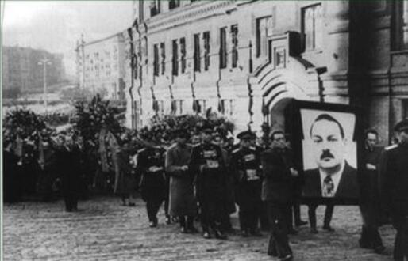
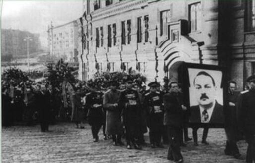

"Stalin...emitiu ordens para prender um grupo de eminentes especialistas médicos...
Quando examinamos 'esse caso' após a morte de Stalin, descobrimos que ele foi fabricado
do início ao fim."
Nikita Khrushchev,
Secret Speech to 20th Congress, 1956.
Os preparativos para o Golpe Revisionista (1943-46)
A tomada do Poder pelos revisionistas soviéticos exigiu a adoção de certas medidas preliminares - a primeira dela sendo o enfraquecimento dos órgãos de segurança do Estado socialista e sua posterior transferência para as mãos dos conspiradores revisionistas.
Em abril de 1943, o órgão responsável pela segurança do Estado era o Comissariado do Povo de Assuntos de Internos (NKVD), que, até então, era chefiado pelo marxista-leninista Lavrenti Beria , foi enfraquecido ao ser dividido em três partes:
- O NKVD, ainda sob a chefia de Beria, mas não se preocupando mais com a segurança do Estado;
- O Comissariado do Povo para a Segurança do Estado (NKGB), chefiado pelo marxista-leninista Vsevolod Merkulov;
- O Departamento de Contra-Espionagem do Comissariado do Povo para a Defesa (SMERSH), chefiado pelo marxista-leninista Viktor Abakumov
Da esquerda para a direita: Merkulov, Abakumov e Beria.
"O NKVD, sob a liderança de Beria, foi assim aliviado dos graves problemas da segurança do Estado e tornou-se
cada vez mais um organização da "área econômica"."
B. Levytsky, The Uses of Terror: The Soviet Secret Service: 1917-1970, 1970
Em 1946, após a Segunda Guerra Mundial,
- O SMERSH foi desmantelado.
- O NKVD foi rebatizado para Ministério dos Assuntos Internos (MVD) e seu chefe, Merkulov, foi substituído pelo revisionista dissimulado Sergey Kurglov e
- O NKGB foi rebatizado para Ministério da Segurança do Estado (MVB), tendo continuado pelos próximos seis anos sob a chefia de Abakumov.
Foto Esquerda: Sergey Kruglov
Foto Direita: Pintura de Beria, Merkulov e Abakumov nas celebrações em homenagem
à Vitória na Grande Guerra Patriótica (1945)
Merkulov "foi um dos colaboradores mais próximos e leais de Beria" (B. Levytsky, op. cit). Na foto, Beria à esquerda, Merkulov ao fundo e Bogdan Kobulov, sentado, em 1934
A primeira fase do Complô dos "Médicos" (1948-51)
Os planos dos conspiradores foram interrompidos, em 1948, quando estourou o "Caso dos Médicos do Kremlim". Nesse ano,
"... Lydia Timashuk, uma médica do Hospital do Kremlin... descobriu distorções intencionais
em conclusões médicas feitas por grandes especialistas médicos que atuaram como consultores
no hospital. Ela expôs esses desígnios criminosos e, assim, abriu os olhos dos órgãos de
segurança para a existência de uma infame conspiração"
Y. Rapoport
The Doctor's plot: Stalin's last crime, 1977.
Foto: Dra. Lydia Timashuk
Dra. Timashuk escreveu para
"... Stalin uma carta na qual ela declarou que os médicos estavam aplicando métodos
supostamente impróprios de tratamento médico"
Nikita Khrushchev (op. cit)
Quanto à data,
"... O primeiro relatório de Timashuk foi elaborado enquanto Zhadnov ainda estava
vivo.""
P. Deribain,
Watchdogs of Terror: Russian Bodyguards from the Tsars to the Comissars, 1984.
Zhadnov morreu em agosto de 1938
Embora Khrushchev tenha alegado posteriormente em seu discurso no 20º Congresso do PCUS, em fevereiro de 1956, que:
"... este caso ignominioso foi armado por Stalin."
Nikita Khrushchev (op. cit)
Ian Grey nos garante que, desde o inínio,
"Stalin tinha sérias dúvidas sobre as alegações da Dra. Timashuk."
I. Grey,
Stalin: Man of History, 1979.
e a filha de Stalin, Svetlana Alliluyeva, confirma:
"A governanta de meu pai me disse, não faz muito tempo, que meu pai estava
extremamente angustiado com os rumos dos acontecimentos... Ela estava servindo
à mesa, como sempre, quando meu pai comentou que não acreditava que os médicos
fossem 'desonestos' e que a única prova contra eles, afinal, eram os 'relatórios'
da Dra. Timashuk."
S. Alliluyeva,
Twenty Letters to a Friend, 1967.
No entanto, Stalin transmitiu essas acusações aos órgãos de segurança do Estado, forças então sob o comando do ministro marxista-leninista, Abakumov. Como resultado,
"...Abakumov iniciou uma investigação dirigida pessoalmente por ele."
P. Deriabin (op. cit)
E as investigações sobre as alegações de Timashuk logo convenceram Stalin de sua veracidade:
Um dia Stalin nos chamou ao Kremlin e leu uma carta de uma médica chamada Timashuk.
Ela alegava que Zhadnov morrera porque os médicos envolvidos no caso supostamente
administratam um tratamento impróprio a ele, um tratamento com a intenção de levá-lo
à morte.
Nikita Khrushchev,
Khrushchev Remembers, 1971.
As primeiras prisões resultantes desta investigação começaram já em dezembro de 1950, com a prisão do Dr. Yakov Etinger, que chefiava uma clínica no Hospital First Gradskaya em Moscou. O nome de Etinger mais tarde (1953) apareceri entre os acusados no 'Caso dos "Médicos"' :
"Yakov Etinger foi preso em 1950"
Y. Rapoport, (op. Cit)
"O grupo terrorista inclui … Professor Y. G. Etinger, um terapeuta".
('Pravda', 13 January 1953, p. 4).
 

Foto Esquerda: Andrei Zhadnov Foto Direita: Funeral de Zhadnov
A demissão e prisão de Abakumov (1951)
Em 1951, por conta do avanço das investigações, os conspiradores revisionistas tinham boas razões para se sentirem extremamente desconfortáveis em relação ao futuro. Rumores circulavam dando conta:
"... que vários membros da equipe de Stalin estavam ameaçados
pelo expurgo que se aproximava"
G. Bortoli, The Death of Stalin, 1973
Claramente, uma ação urgente se fazia essencial para a salvaguarda tanto da conspiração quanto dos conspiradores.
Assim, no final de 1951, os conspiradores revisionistas provocoram a demissão do marxista-leninista Abakumov de seu cargo de Ministro da Segurança do Estado e a sua substituição pelo revisionista dissimulado Semyon Ignatiev:
Foto: Seymon Ignatiev
"Os adversários de Beria no Partido (os oponentes do marxismo-leninismo)
...alcançaram uma vitória notável no final de 1951 com a substituição de
V. Abakumov, um associado de Beria, por S. P. Ignatiev, um oficial do Partido,
como chefe no MVD"
S. Wolin & R. Slusser: 'The Soviet Secret Police', 1957
Boris Levytsky registra que:
"Abakumov, amigo íntimo de Beria, foi afastado do cargo
e substituído por S. D. Ignatiev"
B. Levytsky, (op. cit)
e entende esse movimento como:
"… primeiro passo para uma reorganização completa da polícia secreta, para a remoção de Beria e seus amigos
(= dos Marxistas-Leninistas)… Pois existe a suposição de que Ignatiev era um homem de caráter duvidoso...
algumas evidências... A nomeação de Ignatiev foi favorecida pela circunstância de ele nunca ter tido nada a ver
com Beria e não ter experiência com a polícia secreta."
B. Levytsky, (op. cit)
Pouco depois, Abakumov e várias dezenas de seus assistentes foram presos sob a acusação de 'falta de vigilância em conexão com o' Caso de Leningrado 'de 1949–50 (já analisado):
Foto: Mugshot de Abakumov
"Em… 1951… Abakumov foi preso….Ele foi levado para o Lubyanka (presídio) e colocado em confinamento solitário. Sete
de seus assistentes e várias dezenas de oficiais de segurança do estado foram presos junto com ele… As acusações feitas
contra Abakumov naquela época eram de que ele não havia reconhecido o inimigo do povo durante sua condução do
'Caso de Leningrado'... Em setembro de 1951, ninguém menos que Khrushchev... ecoou a acusação de Stalin de que
Abakumov e seus oficiais não haviam reconhecido o inimigo do povo no aparato do Partido da cidade do norte".
P. Deriabin, (op. Cit.)
O caráter forjado das acusações contra Abakumov e seus assistentes é óbvio pelo fato de que, em dezembro de 1954, Abakumov foi executado pelos mesmos conspiradores revisionistas sob acusações que incluíam as de ter fabricado o 'Caso de Leningrado':
"Abakumov falsificou o chamado 'Caso de Leningrado', no qual vários oficiais do Partido e da União Soviética foram
presos sem justa causa, tendo sido falsamente acusados dos crimes mais graves de Estado".
'Pravda', 24 December 1954, em: R. Conquest: 'Power and Policy in the USSR'; 1961;
(citado como 'R. Conquest (1961');
A finta Georgiana (1951–52)
Como veremos, a remoção e prisão de Abakumov não pôs fim ao perigo para os conspiradores resultante da investigação do caso dos "médicos". Eles, portanto, procuraram se salvar fazendo uma finta contra certos marxistas-leninistas.
Na terminologia militar, uma 'finta' é:
"… um movimento feito com o objetivo de enganar o inimigo quanto aos planos reais de um general."
Shorter Oxford English Dictionary, 1972;
Os conspiradores revisionistas selecionaram a Transcaucásiapara realizarem sua finta, não apenas porque estava muito longe do alvo real de seu ataque, Moscou, mas também porque era o local de nascimento de Stalin e Beria, sendo considerada uma fortaleza marxista-leninista. Charles Fairbanks Júnior fala sobre:
"… o feudo territorial de Beria na Transcaucásia."
C. H. Fairbanks, jr.: 'National Cadres as a Force in the Soviet System: The Evidence of Beria's Career: 1949–53
em J. R. Azrael (Ed.): 'Soviet Nationality Policies and Practices'; New York; 1978; p. 155).
e Levytsky observa que no:
"… 14º Congresso do Partido Comunista da Geórgia em janeiro de 1949 … duas mensagens separadas de saudações
foram enviadas: uma para Stalin e outra para Beria".
B. Levytsky, (op. Cit)
O ataque aos marxistas-leninistas georgianos só poderia ser visto pelos marxistas-leninistas de outros lugares como um ataque provocador e sem fundamento feito por inimigos camuflados. A finta consistia em, quando chegasse o momento (isto é, quando Stalin e seu secretariado pessoal ficassem impotentes para intervir) :
- admitir que o Ministério da Segurança do Estado esteve nas mãos de inimigos camuflados e cometeu erros graves de justiça (por exemplo, na Geórgia), dos quais eles exigiam a correção;
- absolver e libertar os médicos conspiradores culpados, juntamente com os inocentes marxistas-leninistas, sob o manto geral de 'corrigir erros judiciais'.
A finta começou em janeiro de 1951 quando, como Robert Conquest aponta, Vilian Zodelava foi destituído do cargo de líder da Liga da Juventude Comunista da Geórgia. (R. Conquest (1961); p. 140).
Em 24 de maio de 1951:
".. a (rádio) 'Voz da América' anunciou que começaria a transmitir no sábado na língua georgiana".
New York Times, 25 de maio de 1951
Em novembro de 1951, começou a remoção em massa dos principais marxistas-leninistas da Geórgia, os infratores sendo acusados de 'peculato, furto de automóveis e crimes semelhantes'. A notícia vazou para diplomatas ocidentais em fevereiro de 1952:
"Uma grande onda de desfalques, roubos de automóveis e crimes semelhantes na Geórgia soviética resultou em um
expurgo em massa de altos funcionários do Partido Comunista e do governo naquela área, relatam fontes
diplomáticas.
As remoções começaram em novembro passado. Os dois oficiais mais importantes expurgados foram Mikhail Baramiya
e Rostom Shaduri, secretários do Comitê Central do Partido Comunista da Geórgia ".
New York Times, 6 February 1952;
David Lang confirma essa informação:
"Proeminentes comunistas georgianos foram acusados de desviar fundos do Estado, roubar automóveis e
pilhar propriedade do Estado"
D. M. Lang: 'A Modern History of Georgia', 1962.
assim como John Ducoli:
As razões alegadas para o expurgo inicial foram desvios de fundos do Estado, furtos de automóveis, pilhagem
de propriedade do Estado, etc."
J. Ducoli: 'The Georgian Purges (1951–53), em: 'Caucasian Review', Volume 6 (1958).
Em poucos dias, em novembro de 1951, o Comitê Central do Partido Comunista da Geórgia anunciava que as acusações contra alguns ex-líderes georgianos haviam sido ampliadas para incluir "a proteção de oficiais criminosos":
"Recentemente, soube-se que o Segundo Secretário do CC do PC (b) da Geórgia, M.I. Baramiya,
o Ministro da Justiça, A. N. Rapava, e o Procurador da República, B. Ya. Shoniya, têm oferecido
proteção a certos funcionários que cometeram crimes e os têm protegido de todas as maneiras possíveis.
Todos os nomeados foram demitidos dos cargos."
R. Conquest (1961): op. Cit
Mais tarde, após a destituição de Beria da liderança em julho de 1953, os funcionários demitidos foram descritos como "apoiadores de Beria".
Como o então primeiro secretário do Comitê Central da Geórgia, Akaki Mgeladze, relatou ao Congresso do Partido da Geórgia em setembro de 1952:
"Em 1951, várias centenas de partidários de Beria na Geórgia foram expurgados".
C. H. Fairbanks, junior: op. cit.
Todos os principais marxistas-leninistas da Geórgia foram removidos e substituídos por revisionistas convictos.
Assim, em abril de 1952, um Plenário do Comitê Central do Partido Comunista da Geórgia demitiu Kandida Charkviani como primeiro secretário, Rostom Shaduri e Mikhail Baramiya como segundos secretários, Valerian Bakradze como vice-primeiro-ministro, Avksenty Rapava como ministro da Justiça e vários de outros líderes georgianos proeminentes.
Foto Esquerda: Rapava
Foto Centro: Kandida Charkviani
Foto Direita: Valerian Bakradze
O Plenário elegeu, então, um novo primeiro secretário - o revisionista camuflado Akaki Mgeladze:
"Kandida Charkviani… Foi substituído, e um novo líder, Akaki Mgeladze, ex-secretário do importante comitê regional
do partido na Abecásia, foi instalado em seu lugar".
Pravda', 6 de junho de 1952, em: 'New York Times', 8 de junho de 1952
Mgeladze foi em grande escala o responsável por levar adiante o processo de remoção de Marxistas-Leninistas de posições de responsabilidade no Partido Georgiano:
"Mgeladze começou a trabalhar para expurgar o Partido e o aparelho governamental de alto a baixo. Em seis meses,
ele substituiu metade dos membros do Comitê Central do Partido Comunista da Geórgia que haviam retornado nas
eleições de 1949, e conseguiu uma completa convulsão na hierarquia administrativa da República. Vários altos
funcionários removidos por Mgeladze, notavelmente Valerian Bakradze, vice-presidente do Conselho de Ministros da
Geórgia (vice-premiê - Ed.) eram nomeações pessoais de Beria".
D. M. Lang, op. Cit
"Após meros seis meses de liderança, Mgeladze expurgou aproximadamente 55% dos 111 membros e candidatos a membros
do Comitê Central que foram eleitos em 1949".
J. Ducoli: op. cit
Beria veio de Moscou para participar do Plenário de abril de 1952:
"Beria esteve presente no plenário em abril que confirmou formalmente a sucessão. Os seguidores de Charkviani
foram substituídos por homens de Abecásia, onde Mgeladze havia sido chefe do Partido."
R. G. Suny: 'The Making of the Georgian Nation', 1989.
"Em abril de 1952, Beria, agora Vice-Presidente do Conselho de Ministros Soviético (Vice-Premier da URSS) veio de
Moscou para participar de uma reunião do Comitê Central do Partido Comunista da Geórgia".
D. M. Lang: op. cit.
A presença de Beria permitiu que os revisionistas camuflados "dessem publicidade", ou seja, difundissem a história completamente falsa de que as mudanças na chefia que eles articularam na Geórgia haviam sido promovidas "sob as instruções de Stalin":
"Naquela época (primavera de 1952), soube-se que o próprio Sr. Beria tinha ido à Geórgia para corrigir uma
situação composta de suborno generalizado e outros tipos de corrupção. Mais tarde, soube-se que o próprio
Premier Stalin teve de intervir para ordenar expurgos no Partido Comunista da Geórgia".
New York Times, 3 de janeiro de 1953;
Na verdade, os líderes georgianos que foram removidos eram marxistas-leninistas que eram apoiados por Beria e Stalin e foram eleitos por recomendação deles:
"Vários altos oficiais destituídos por Mgeladze, notavelmente Valerian Bakradze, vice-presidente do Conselho de Ministros da Geórgia (vice-premiê)
foram nomeações pessoais de Beria".
D. M. Lang: op. cit.
"O Sr. Beria teve que presidir a remoção dos homens que ele havia instalado à frente do Partido da Geórgia e
permitir que essas acusações de corrupção fossem anunciadas como verdadeiras".
New York Times, 17 de abril de 1953;
Apesar disso, essa história de que as mudanças na liderança foram provocadas pelos desejos de Beria e Stalin foi útil para a repressão da oposição às mudanças. Mgeladze disse ao Congresso do Partido da Geórgia em setembro de 1952:
"Estas sessões plenárias (de novembro de 1951 e abril de 1952) adotaram resoluções baseadas na decisão do Comitê
Central do Partido Comunista da União e nas instruções pessoais do camarada Stalin".
A. Mgeladze, Report to Congress of Georgian Communist Party, September 1952, em: R. Conquest (1961): op. cit.
As razões apresentadas para o suposto desejo de Beria e Stalin por essas mudanças eram naturalmente um tanto nebulosas. Mgeladze disse à Liga da Juventude Comunista da Geórgia em maio de 1952:
"O camarada Stalin encontrou deficiências na liderança do Partido Comunista e da Liga da Juventude Comunista da
Geórgia, que ameaçavam ter consequências graves e mostrou-nos caminhos para corrigir erros"
A. Mgeladze: Report to Georgian Young Communist League, May 1952, in: R. Conquest (1961): op. cit.
Essa alegação vaga posteriormente tornou-se mais concreta. Mais tarde, em 1952, alguém descobriu alguns comentários críticos de Stalin sobre o perigo do nacionalismo na Geórgia.
Os marxistas-leninistas demitidos eram agora acusados de nacionalismo criminoso e teriam sido presos em conexão com as observações críticas feitas por Stalin sobre os perigos do nacionalismo:
"Nos expurgos georgianos de 1951–52, as nomeações de Beria foram acusadas de leniência para com o nacionalismo
georgiano."
C. H. Fairbanks, Junior: op. cit.
Mgeladze disse ao Congresso do Partido da Geórgia em setembro de 1952:
"A antiga liderança esqueceu-se do fato de que os reacionários internacionais estão tentando encontrar em nossa
República elementos nacionalistas com atitude hostil (ao Governo Soviético), visando, com a ajuda destes elementos,
continuar o trabalho de espionagem diversionista."
New York Times, 23 September 1952;
Vários líderes marxista-leninistas demitidos foram acusados de manifestações criminosas de nacionalismo georgiano:
"Mgeladze e seu Ministro da Segurança do Estado, Rukhadze, acusaram alguns protegidos de Beria de nacionalismo.
Eles eram M. I. Baramiya… .Rapava, Shoniya. Eles foram detidos e encarcerados".
J. Ducoli: op. Cit .
"Todos os nomeados (Baramiya, Rapava e Shoniya) foram presos mais tarde".
R. Conquest (1961): op. Cit .
"Charkviani, secretário do Comitê Central da Geórgia de 1939 a 1952, Rapava, então Ministro de Assuntos Internos
da República da Geórgia, e outros foram destituídos de seus cargos e presos, após serem acusados de nacionalismo
na conferência do Partido da Geórgia em abril de 1952. O golpe foi desferido por Rukhadze, então Ministro da Segurança
do Estado da Geórgia."
Boris Nicolaevsky: 'Power and the Soviet Elite'; New York; 1965;
Foto Esquerda: Akaki Mgeladze
Foto Direita: Nikolay Rukhadze
O contra-golpe marxista-leninista na Geórgia
Enquanto isso, os marxista-leninistas, percebendo que a segurança do estado socialista havia sofrido um grave revés na Geórgia, investigaram o caso por meio do 'secretariado especial' de Stalin, que, como veremos, funcionava como uma força especial de segurança sob o controle de os marxistas-leninistas. O secretariado especial descobriu evidências suficientes para estabelecer que o Ministro da Segurança do Estado da Geórgia, Nikolay Rukhadze, comportou-se de maneira inadequada no caso dos marxistas-leninistas georgianos. Como resultado, em julho de 1952, os revisionistas foram obrigados a demitir Rukhadze, embora tenham conseguido evitar sua prisão e qualquer reversão de suas ações na 'finta georgiana' até o mês de abril seguinte:
"Em julho de 1952, Rukhadze que, como Ministro da Segurança do Estado, foi responsável pelo expurgo de Baramiya,
foi removido…"
R. Conquest (1961): op. cit
O indiciamento no "caso dos médicos" (1953)
Apesar da remoção e prisão de Abakumov, a intervenção do secretariado pessoal de Stalin garantiu que a investigação sobre o "complô dos médicos" continuasse. Isaac Deutscher confirma que:
"… Ignatiev, o Ministro da Segurança do Estado, era um relutante executor de ordens".
I. Deutscher,
Stalin: A Political Biography, 1968.
Ignatiev, assim, manteve-se indiferente à investigação do "complô dos médicos", deixando a conduta desta para seu vice, o marxista-leninista Mikhail Ryumin:
"Ryumin supervisionou pessoalmente a investigação (no 'Caso dos Médicos')."
Y. Rapoport: op. cit
Foto: Mikail Ryumin
Ryumin havia anteriormente chefiado a Seção de Segurança do Estado do secretariado pessoal de Stalin:
"Ryumin, antes de ser nomeado para o cargo de vice-ministro da Segurança do Estado… chefiava a seção de
segurança do Estado no secretariado pessoal de Stalin."
B. Nicolaevsky, op. Cit
Como resultado da conclusão desta investigação,
"… no verão de 1952, muitos … médicos que trabalhavam no Hospital do Kremlin há muitos anos e que trataram de
muitos estadistas foram demitidos sumariamente. Entre eles, estavam Miron Vovsi e Vladirmir Vinogradov.
O antigo chefe do Hospital do Kremlin , Aleksey Busalov, Mikhail Yegorov … e Sophia Karpai foram presos.
Y. Rapoport, op. Cit
Em 13 de janeiro de 1953, o 'Pravda' publicou o relatório da prisão de:
"… um grupo terrorista de médicos que tinha como objetivo encurtar a vida de figuras públicas ativas da
União Soviética por meio da sabotagem no tratamento médico… Os participantes deste grupo terrorista,
aproveitando-se de suas posições de médicos e abusando da confiança dos pacientes, por má intenção deliberada…
fizeram diagnósticos incorretos... condenando-os a um posterior tratamento incorreto."
Pravda, 13 January 1953
Nove médicos foram citados entre os participantes deste grupo terrorista, a saber:
- Professor M. S. Vovsi, terapeuta
- Professor V. N. Vinogradov, terapeuta
- Professor M. B. Kogan, terapeuta
- Professor B. B. Kogan, terapeuta
- Professor P. I. Yegorov, terapeuta
- Professor A. I. Feldman, otorrinolaringologista
- Professor Ya. G. Etinger, terapeuta
- Professor Grinshtein, neuropatologista
- Doutor G.I. Maiorov, terapeuta
Foto: Professor M. S. Vovsi, Professor V. N. Vinogradov e Professor Ya. G. Etinger
Professor Mikail B. Kogan, Professor Boris. B. Kogan e rofessor Grinshtein

Professor P. I. Yegorov e Professor A. I. Feldman
Dos acusados, Vladimir Vinogradov era:
"… o médico pessoal de Stalin"
Y. Rapoport, op. Cit
Mikhail e Boris Kogan eram irmãos, enquanto Miron Vovsi era parente do ator judeu 'Solomon Mikhoels', cujo sobrenome verdadeiro era Vovsi.
Os médicos foram acusados de terem assassinado desta forma Andrey Zhadnov e Alelsandr Scherbakov, e de tentarem assassinar os marechais Aleksandr Vasilevsky, Leonid Covorov e Ivan Konev, além do general Sergey Chtemenko e do almirante Cordey Iavachenko.
A alegação era de que
...a maioria dos participantes do grupo terrorista (M. S. Vovsi, B. B. Kogan, A. I. Feldman, AM Grinshtein,
Ya. H. Yetinger e outros) eram ligados à organização judaica internacional de nacionalistas burgueses
(sigla: JOINT), criada pela inteligência norte-americana com o propósito de fornecer ajuda material aos judeus
em outros países. Na verdade, esta organização, sob direção da inteligência norte-americana, conduz uma extensa
espionagem, atividades terroristas e outros trabalhos subversivos em muitos países, incluindo a União Soviética
...
O custodiado Vovsi disse aos investigadores que havia recebido ordens de 'exterminar os quadros dirigentes da
URSS' - ordens vindas dos EUA por meio da organização 'JOINT', através um médico de Moscou, Shimeliovich, e do
conhecido nacionalista burguês e judeu chamado Mikhoels.
Outros participantes do grupo terrorista (V. N. Vinogradov, M. B, Kogan, P. I. Yegorov) provaram-se serem velhos
agentes da inteligência britânica."
Pravda, 13 January 1953,
Fotos: Aleksandr Sherbakov, Mal. Aleksandr Vasilevsky e Mal. Leonid Govorov
Fotos: Mal. Ivan Konev, Gal. Sergey Shtemenko e Almirante Gordey Levchenko
O nome completo da 'JOINT' era 'American Jewish Joint Distribution Committee', fundado nos Estados Unidos em novembro de 1914 através da fusão de três comitês, ostensivamente como uma instituição de caridade internacional para a assistência de judeus em todo o mundo.
O anuncio encerrava dizendo:
"A investigação será concluída em breve".
Pravda, 13 de janeiro de 1953
Um editorial no Pravda no mesmo dia lembrava às pessoas que, na década de 1930, um grupo de médicos envolvidos em uma conspiração revisionista oculta havia admitido em seu julgamento público o assassinato de uma série de importantes marxistas-leninistas soviéticos administrando tratamento médico deliberadamente incorreto a eles:
"As agências de segurança do Estado não descobriram a tempo a organização terrorista sabotadora dos médicos.
No entanto, essas agências deveriam ter estado particularmente vigilantes, uma vez que a história já registrava
casos de assassinos e traidores da Pátria conduzindo suas maquinações sob o disfarce de médicos, como os
"médicos" Levin e Pletnev, que mataram o grande escritor russo A. M. Gorky e os notáveis estadistas soviéticos
V. V. Kuibyshev e V. R. Menzhinsky por deliberado tratamento errado sob as ordens de inimigos da União Soviética"
Pravda, 13 January 1953
A matéria original afirmava que:
"os médicos criminosos confessaram".
Pravda, 13 January 1953
e, em seu discurso secreto no 20º Congresso do PCUS em fevereiro de 1956, Khrushchev declarou:
"Pouco depois da detenção dos médicos, nós, membros do Bureau Político, recebemos atas com
as confissões de culpa dos médicos."
N. S. Khrushchev: Secret Speech to 20th Congress of the CPSU
E depois de suas libertações pelos conspiradores revisionistas, após a morte de Stalin em março de 1953, os "médicos" admitiram que suas confissões eram genuínas:
Quando todos fomos libertados, os próprios Vovsi e Vinogradov me disseram que haviam admitido todos os crimes
que lhes foram imputados… O aspecto mais trágico dessas confissões era que eles admitiram não só crimes que
eles mesmos teriam supostamente cometido, mas também a existência de uma organização criminosa e de ações
criminosas coletivas….
Os acusados foram levados a cooperar com a investigação, expondo os crimes de terceiros. Isso aconteceu com
Vovsi e Vinogradov, e talvez com outras pessoas também.
Sophia Karpai, ex-médica do Hospital do Kremlin, me contou no verão de 1953 sobre sua acareação com Vovsi,
Vinogradov e Vasilenko na prisão. Diante dela, eles afirmaram que ela havia executado suas ordens criminosas
de administrar tratamentos prejudiciais aos seus pacientes… Assim, as pessoas que haviam caído em desgraça tornaram-se
testemunhas de acusação."
Y. Rapoport (op. cit)
Além disso, os médicos liberados testemunharam que suas confissões não foram realizadas como resultado da aplicação de:
".. tortura, sobre a qual abundavam rumores nos anos de expurgo memoráveis (1937–1939)…
Vinogradov me disse que tinha resolvido desde o início não esperar até que começassem a torturá-lo,
mas admitir todas as acusações, que incluíam uma de espionagem para França e Grã-Bretanha."
Y. Rapoport, op. cit
A determinação dos marxista-leninistas soviéticos de prosseguirem com o caso dos "médicos" tornou a interrupção deste processo uma questão urgente, de vida ou morte, para os conspiradores revisionistas, sendo a destruição do secretariado pessoal de Stalin uma preliminar necessária para destruir Stalin propriamente.
Fotos: Dr. Lev Levin e Dr. Dmitry Pletnev
Fotos: Maxim Gorky, Valerian Kuibyshev, Viacheslav Menjinsky
A destruição do Sistema de Defesa em torno de Stalin
é conhecido o papel do secretariado pessoal de Stalin - também chamado de "Setor Especial" do Secretariado do Comitê Central do Partido - na realização dos julgamentos de traição da década de 1930. Este órgão, contudo, também desempenhou um papel importante na defesa contra ataques terroristas ao núcleo marxista-leninista do Partido, que era liderado por Stalin, no seio do Partido Comunista da União Soviética.
O setor especial era chefiado desde 1928 pelo marxista-leninista Aleksandr Poskrebyshev:
"Como chefe do 'Setor Especial' do Comitê Central por muitos anos, ele (Poskrebyshev) Foi o confidente mais
próximo de Stalin até 1952".
R. Conquest,
The Great Terror, 1971
enquanto o Tenente-General Nikolay Vlasik:
"… por mais de vinte e cinco anos foi o chefe da segurança pessoal de Stalin; ele sabia muito e era de
confiança do chefe."
D. Volkogonov,
Stalin: Triumph and Tragedy, 1991
Dmitri Volkogonov afirma que Pokrebyshev
"… até o fim de seus dias permaneceu como o servo devoto de seu mestre… Ele era um homem com a memória de um
computador. Você poderia obter uma resposta exata a qualquer pergunta. Ele era uma enciclopédia ambulante…
Stalin... confiava em... Vlasik e Poskrebyshev."
D.Volkogonov, op. Cit.
e Levtysky confirma que:
"… aqueles que conheciam as condições da cúpula do Partido depois de 1945 descrevem Poskrebyshev como um
gênio organizador com uma memória fenomenal."
B. Levytsky: op. Cit.
Conquest afirma que Poskrebyshev era:
"… o homem mais próximo e diretamente associado a Stalin (mais tarde descrito no discurso secreto de
Khrushchev como o 'escudeiro' de Stalin).
R. Conquest, 1961
Volkogonov diz de Vlasik:
"Por mais de vinte e cinco anos, Vlasik fora o chefe da segurança pessoal de Stalin;
ele sabia que o chefe confiava muito nele".
D. Volkogonov: op. Cit.
e Robert McNeal diz que
"…Vlasik e Poskrebyshev efetivamente vigiavam os acessos ao escritório de Stalin,
um controlando a segurança e o outro, controlando a agenda."
R. H. McNeal, Stalin: Man and Ruler, 1988
Fotos Esquerda: Tenente-General Nikolay Vlasik
Foto Direita: Aleksandr Poskrebyshev
Estava claro, portanto, que um ataque terrorista bem-sucedido a Stalin exigia a eliminação prévia de Poskrebyshev e Vlasik(que eram leais a Stalin).
Walter Laqueur afirma:
"Durante o último ano da vida de Stalin, Poskrebyshev caiu em desgraça."
W. Laqueur, Stalin: The Glasnost Revelations, 1990;
e Nikita Khrushchev nos conta como se deu essa 'queda em desgraça'. Ele descreve como, durante o inverno de 1952–53, se viu sob a suspeita de ter vazado documentos secretos, e como conseguiu esquivar-se de ser considerado culpado, de forma que a culpa recaiu sobre Poskrebyshev:
"Stalin (…) reclamou que documentos secretos vazaram por meio de nossos secretariados… Stalin dirigiu-se
diretamente a mim: 'É você, Khrushchev! O vazamento é através do seu secretariado!'.Eu... consegui me desviar
do golpe contra mim, mas Stalin não deixou o assunto esfriar… Depois que convenci Stalin de que o vazamento
não fora por meio de meu secretariado, ele chegou à conclusão de que o vazamento ocorrera pelo secretariado de
Poskrebyshev... Poskrebyshev havia trabalhado para Stalin por muitos anos... Stalin removeu Poskrebyshev de
seu posto e promoveu outra pessoa."
N. S. Khrushchev, 1971
Niels Rosenfeldt confirma que
"… Poskrebyshev foi afastado de seu antigo cargo o mais tardar durante o inverno de 1952–53… O guarda-costas de Stalin,
Vlasik, desapareceu por volta dessa época (inverno de 1952–53)."
F. E. Rosenfeldt: Knowledge and Power: The Role of Stalin's Chancellery in the Soviet System of Government, 1978
assim como o faz Adam Ulam:
"..Poskrebyshev e Vlasik… se viram em desgraça."
B. Ulam: Stalin: The Man and His Era, 1989;
Volkogonov afirma que
".. Poskrebyshev e Vlasik eram compromissados (com Stalin)… pouco antes da morte de Stalin,
então, foram afastados dele".
D. Volkogonov: op. Cit
e McNeal confirma que
"… esses dois homens (Poskrebyshev e Vlasik) foram expulsos em 1952".
R. H. McNeal, op. Cit
Deriabin concorda que as acusações de deslealdade levantadas contra Poskrebyshev e Vlasik eram completamente falsas:
"As acusações contra aquele par de servos fiéis de longa data eram uma mentira descarada e completa.
Mas… Stalin demitiu os dois."
P. Deriabin, op. Cit .
Os conspiradores revisionistas colocaram Poskrebyshev em prisão domiciliar:
"Poskrebyshev foi colocado em prisão domiciliar em sua dacha nos arredores de Moscou, com guardas
a postos para mantê-lo preso."
P. Deriabin, op. Cit .
"Poskrebyshev desapareceu. Ele simplesmente não foi mencionado novamente, exceto por um breve escárnio
no discurso secreto de Khrushchev."
R. Conquest, 1961
enquanto Vlasik foi expulso do Partido e enviado para Sverdlovsk como sub-comandante de um campo de trabalho:
"Vlasik… não foi apenas despedido, mas também expulso do Partido e enviado para Sverdlovsk… como subcomandante
de um… campo de trabalho."
P. Deriabin, op. Cit.
Vlasik veio a Moscou e:
"… foi até o Kremlin na tentativa de ver Stalin… Mas foi preso próximo dos portões do Kremlin e enviado para a
prisão de Lubyanka. Duas semanas depois, ele morreu lá de uma 'doença'."
P. Deriabin, op. Cit.
Entrada de detentos no presídio Lubyanka, 1928
Volkogonov confirma que Vlasik
"… foi preso em 16 de dezembro de 1952"
D. Volkogonov, op. Cit.
e registra que, durante o interrogatório de Vlasik, foi exercida pressão sobre ele:
"… para fazê-lo incriminar Poskrebyshev. Ele se recusou."
D. Volkogonov, op. Cit.
Ulam confirma que
"… Vlasik, que era chefe de sua segurança pessoal (de Stalin) desde a Guerra Civil, estava preso. Seu secretário
confidencial, Poskrebyshev, havia sido expulso."
B. Ulam, op. Cit.
e a filha de Stalin, Svetlana Alliluyeva, conta a mesma história:
"Pouco antes de meu pai morrer, até mesmo alguns de seus mais íntimos (Camaradas) caíram em desgraça: o
perene Vlasik foi mandado para a prisão no inverno de 1952 e o secretário pessoal de meu pai, Poskrebyshev,
que estava com ele há vinte anos, foi removido."
S. Alliluyeva, Twenty Letters to a Friend, 1967
No entanto, o ataque ao sistema de defesa em torno de Stalin não se limitava à eliminação de Poskrebyshev e Vlasik. Durante 1952, os revisionistas ocultos estabeleceram:
"… uma comissão para investigar… todo o aparato de segurança do Estado".
P. Deriabin, op. Cit.
Esta comissão:
"… passou… a cortar a guarda-pessoal de Stalin até os ossos… Cerca de sete mil homens foram retirados da força
original da Okhrana que era de cerca de dezessete mil… Quando o corte foi concluído, os guarda-pessoal de Stalin,
a prioridade nº 1 da Okhrana, foi cortada pela metade."
P. Deriabin, op. Cit.
Isso deixou Stalin
"… com uma guarda formada… apenas por um pequeno grupo de oficiais… um grupo que tinha pouca experiência em
segurança, especialmente como guarda-costas, e que era chefiado por um mero major."
P. Deriabin, op. Cit.
Rosenfeldt acrescenta que nessa época o serviço de guarda especial, cuja tarefa era garantir a segurança pessoal de Stalin, após "uma purga completa e uma grande redução de pessoal", juntamente com o Comando do Kremlin e a Administração Médica do Kremlin, foram todos subordinados ao Ministério da Segurança do Estado controlado por revisionistas:
"O serviço especial de guarda, cuja função era garantir a segurança pessoal de Stalin, foi subordinado ao
Ministério da Segurança do Estado (MGB) em 1952, após um expurgo completo e uma grande redução de pessoal.
Ao mesmo tempo e da mesma forma o Comando do Kremlin e a Administração Médica do Kremlin foram colocados
sob o controle do MGB."
N. E. Rosenfeldt, op. cit.
Então, em 17 de fevereiro de 1953, duas semanas antes da morte do próprio Stalin, foi relatada a morte repentina do Major-General Pyotr Kosynkin, Subcomandante da Guarda do Kremlin, encarregado dos arranjos operacionais para proteger Stalin:
"Em 15 de fevereiro de 1953, pouco antes da morte de Stalin, o comandante da guarda do Kremlin, o general Pyotr
Kosynkin, que era responsável pela segurança pessoal de Stalin, morreu".
B. Levytsky, op. Cit.
"O subcomandante do Kremlin, major-general Kosynkin, encarregado dos arranjos operacionais para proteger Stalin,
morreu de ataque cardíaco duas semanas antes de Stalin. Ou assim dizia o anúncio".
P. Deriabin & F. Gibney, The Secret World, 1959
"O Vice-Chefe do Comando do Kremlin, Major-General Petr Kosynkin, faleceu prematuramente em 15 de fevereiro de 1953."
N. E. Rosenfeldt, op. Cit.
"Em 17 de fevereiro de 1953 … o major-general Petr Kosynkin, vice-comandante da Guarda do Kremlin, morreu repentinamente
de um ataque cardíaco. Essa convulsão repentina foi bastante incomum, para dizer o mínimo. Um fanático admirador de
Stalin, Kosynkin estivera em o auge da vida e da saúde… Os exames físicos extremamente cuidadosos a que são
regularmente submetidos todos os nomeados, como Kosynkin, pressupõem automaticamente que o líder da guarda estava em
ótimas condições e certamente não sofria de nenhum problema cardíaco.
Em 17 de fevereiro de 1953, veio um relatório,
pouco divulgado na época, de que o subcomandante do Kremlin, general Kosynkin, o único guarda remanescente em quem
Stalin podia confiar, morrera repentinamente de "ataque cardíaco".
P. Deriabin, op. Cit.
Major-General Pyotr Kosynkin, Subcomandante da Guarda do Kremlin
Finalmente, em 21 de fevereiro de 1953
"… uma mudança muito significativa foi feita no Alto Comando do Exército. O General Sergey Shtemenko foi
substituído pelo Marechal Vasily Sokolovsky como Chefe do Estado-Maior das Forças Armadas Soviéticas… E,
simultaneamente com a substituição de Shtemenko, os guarda-costas da Okhrana foram removidos do estado-maior
geral."
P. Deriabin, op. Cit.
"O Chefe do Estado-Maior General das Forças Armadas, Sergey Shtemenko, foi destituído de seu cargo na mesma época
(meados de fevereiro de 1953)."
N. E. Rosenfeldt, op. Cit.
Deriabin resume este 'processo de privar Stalin de toda a sua segurança pessoal' como 'um negócio estudado e muito habilmente conduzido':
"Isso completou o processo de privar Stalin de toda a segurança pessoal, exceto pela relativa fachada dos oficiais
menores da Okhrana em seu escritório e em sua casa. Este negócio estudado e muito habilmente conduzido: o
enquadramento de Abakumov, a demissão de Vlasik, o descrédito de Poskrebyshev, a emasculação da Okhrana e sua
subserviência forçada ao MGB (controlado por revisionistas), o 'ataque cardíaco" Kosynkin, a substituição de Shtemenko
e a remoção do estado-maior geral dos últimos vestígios do controle sobre a Okhrana. E certamente não deve ser
esquecido neste momento o controle do MGB sobre o consultório médico do Kremlin."
P. Deriabin, op. Cit.
e que conduziu os revisionistas ao assento dos motoristas:
"Com a segurança do Estado e as Forças Armadas sob seu comando, os coniventes estavam finalmente no assento do
motorista."
P. Deriabin: op. Cit.